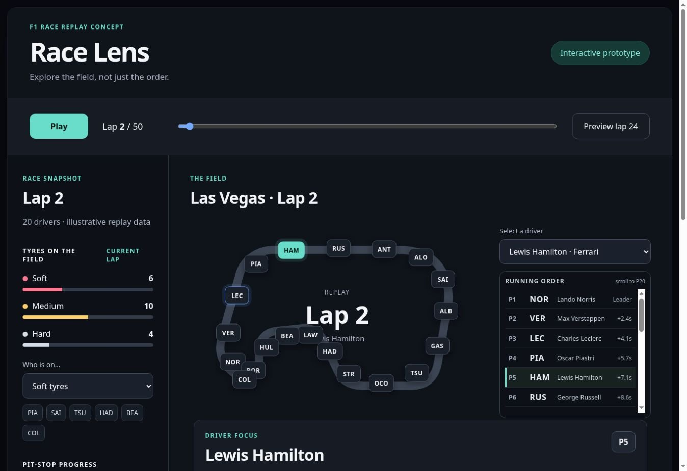
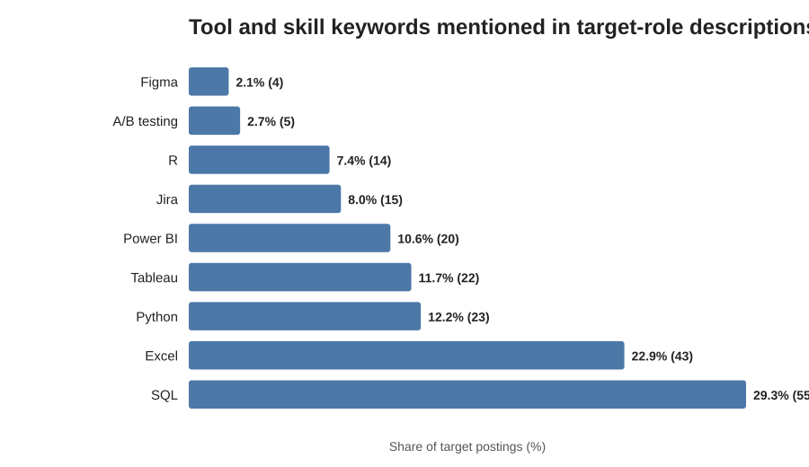
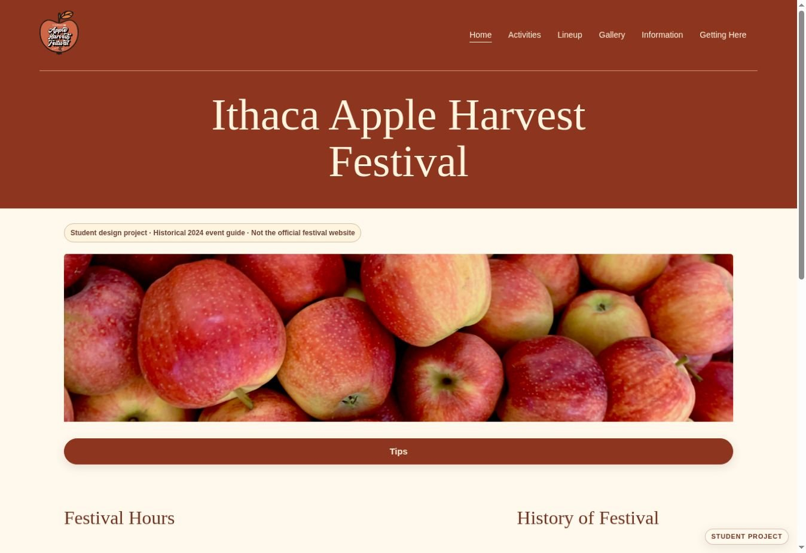

01 / Web app

Cornell University / Information Science
I study Information Science at Cornell. I build web apps, work with data, and spend a lot of time figuring out why an interface does — or doesn’t — make sense.
Selected work — an archive
Web apps, F1 research, and data analysis. Each project follows a different question.





About me
I'm Beryl Koko, an Information Science student graduating in May 2027. My projects have taken me from building a book recommendation app to studying F1 interfaces and analyzing job postings.
I like working through the details — the research, the data, the design choices, and the code.
Read my résumé ↗Contact